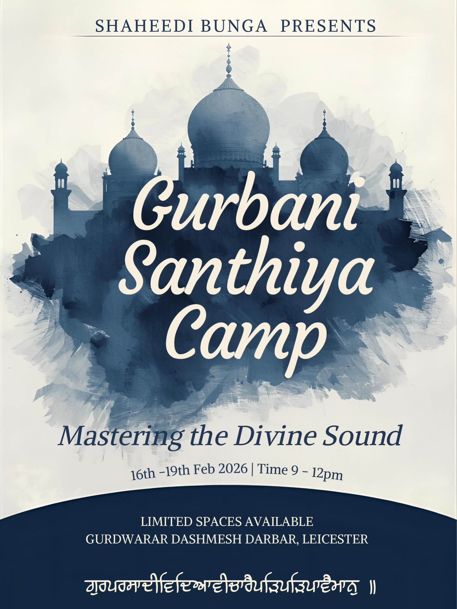
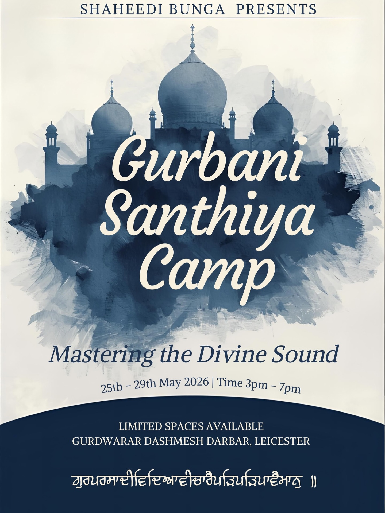

Shaheedi Bunga · Vidyala
ਗੁਰਪਰਸਾਦੀ ਵਿਦਿਆ ਵੀਚਾਰੈ ਪੜਿ ਪੜਿ ਪਾਵੈ ਮਾਨੁ ॥
Seven in the morning, six days a week,
for as long as it takes.
What santhiya is
Santhiya is learning to read Gurbani correctly — every letter, every vishraam, every sound placed where it belongs.
It is the slowest thing we teach. A student sits with a pothi and an ustad and goes one line at a time, out loud, until the pronunciation is right. Not fluent — right. There is no shortcut and no syllabus to rush.
One group here finished their laarivaar santhiya after five years. That is the ordinary pace of it, and the reason the class runs every single morning rather than once a week.
The week
Santhiya sessions are marked in gold. Everything else on the timetable is listed so you can see where santhiya sits in the week — most students come to more than one class.
All at Guru Tegh Bahadur Gurdwara, 106 East Park Road, Leicester LE5 4QB.
Camps
Three or four times a year the vidyala runs a short intensive — four or five consecutive days on nothing but santhiya. It is the easiest way in if a 7am class every morning is more than you can commit to yet.
Camps run at Gurdwara Dashmesh Darbar, Gypsy Lane. Places are limited and they fill.


Starting
Come to any morning session and sit at the back. Bring nothing — pothis are there. If you have never read Gurmukhi at all, say so when you arrive and you will be started at the letters.
Ask about a place